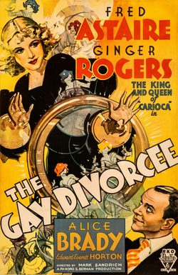

The Gay Divorcee
Starring: Ginger Rogers, Fred Astaire, Edward Everett Horton
Director: Mark Sandrich
Writer: George Marion, Jr., Dorothy Yost, Edward Kaufman
Producer: Pandro S. Berman
The Gay Divorcee is a 1934 American musical romantic comedy film directed by Mark Sandrich and starring Fred Astaire and Ginger Rogers. It also features Alice Brady, Edward Everett Horton, Erik Rhodes, and Eric Blore. The screenplay was written by George Marion Jr., Dorothy Yost, and Edward Kaufman.
Trivia
- Nominated for: Academy Award for Best Picture; Academy Award for Best Production Design; Academy Award for Best Score, Adaptation or Treatment; Academy Award for Best Sound.
- Based on Gay Divorce (1932 musical with music and lyrics by Cole Porter and book by Dwight Taylor, adapted by Kenneth Webb and Samuel Hoffenstein).
- After the success of Astaire and Rogers's first feature, Flying Down to Rio (1933), RKO's head of production, Pandro S. Berman, purchased the screen rights to Dwight Taylor's Broadway musical Gay Divorce, with another Astaire and Rogers matchup in mind.
- According to Astaire's autobiography, director Mark Sandrich claimed that RKO altered the title to insinuate that the film concerned the amorous adventures of a recently divorced woman (divorcée).
- Dance routines from the film, specifically "Night and Day" and the scene in which Astaire dances on the table, were taken from Astaire's performances in the original play, Gay Divorce.
Filming Locations
- Santa Monica
- Exteriors set in what was supposed to be the English countryside were shot in Clear Lake, California.
- Additional exteriors were filmed in Santa Monica and Santa Barbara, California.
Previous Showings
31 Runs • 19 Festivals
Original Billings: 1 run (November 11, 1934)
Original Run: November 11, 1934 (Sunday - Tuesday)
All runs on record (31):
- November 11, 1934 (Sunday - Tuesday)Fred Astaire, Ginger Rogers
- July 10 - 14, 1987w/ Top Hat
- May 25 - 27, 1990w/ Follow the Fleet
- August 14 - 16, 1991w/ Top Hat
- January 8 - 13, 1993w/ Top Hat
- July 29 - 30, 1993w/ Show Boat
- April 16 - 19, 1994w/ My Man Godfrey
- March 4 - 9, 1995w/ Trouble in Paradise
- July 13 - 16, 1996w/ It Happened One Night
- October 18 - 20, 1996w/ Morning Glory
- July 9 - 10, 1997w/ Top Hat
- November 21 - 24, 1998Romantic Comedy Seriesw/ My Man Godfrey
- August 25 - 27, 1999Summer 1999w/ Swing Time
- August 12 - 15, 2000Summer 2000w/ Arsenic and Old Lace
- March 22 - 23, 2001Hollywood Musicals, 1929-1939w/ The Merry Widow
- November 27 - 29, 2002Fall Folliesw/ 42nd Street
- November 3 - 4, 2004Marlon Brando: His First Decade in Films, plus Nine Musicals with Fred Astaire aw/ Trouble in Paradise
- March 17 - 19, 2006Winter 2006w/ After the Thin Man
- March 31 - April 1, 2007Film Noir, Val Lewton, 1930s musicals and more!w/ Cleopatra
- July 10, 2007Summer 2007, including Films Starring Fred Astairew/ Top Hat
- June 23 - 25, 2009Summer 2009w/ Queen Christina
- November 20 - 21, 200920th Anniversary Festivalw/ Top Hat
- October 12 - 14, 2011Fall 2011w/ Top Hat
- June 29 - July 2, 2013Summer 2013w/ Top Hat
- June 11 - 13, 2014Fred Astaire 2014w/ The Story of Vernon and Irene Castle
- August 10 - 12, 2016Summer 2016w/ Top Hat
- December 2 - 4, 2016Astaire and Rogers plus The Marx Brothersw/ Animal Crackers
- June 26 - 28, 2018w/ Christmas in July
- July 9 - 10, 2022Summer 2022w/ Top Hat
- March 1 - 3, 2024Fred Astaire 2024w/ Flying Down to Rio
- May 24 - 25, 2025Fred Astaire 2025w/ Roberta